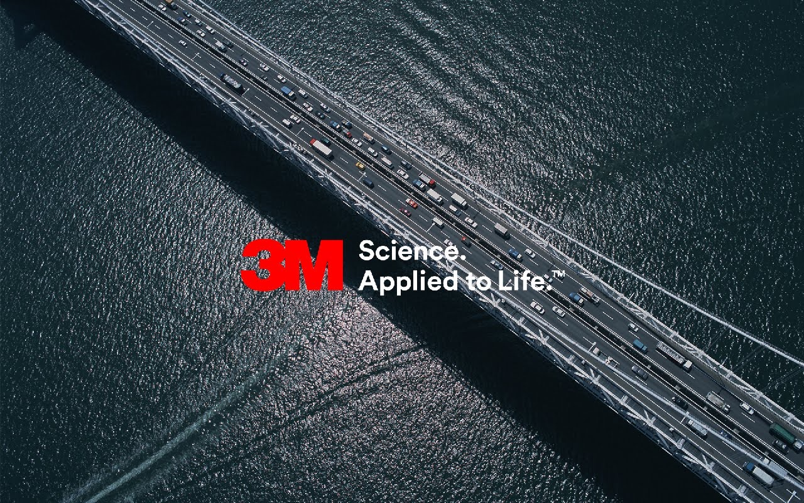
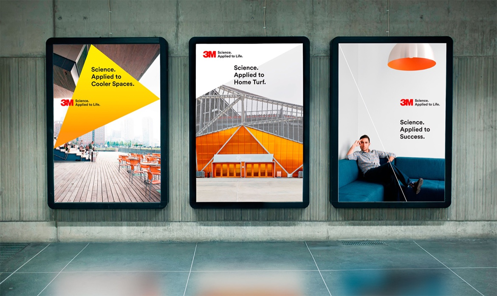
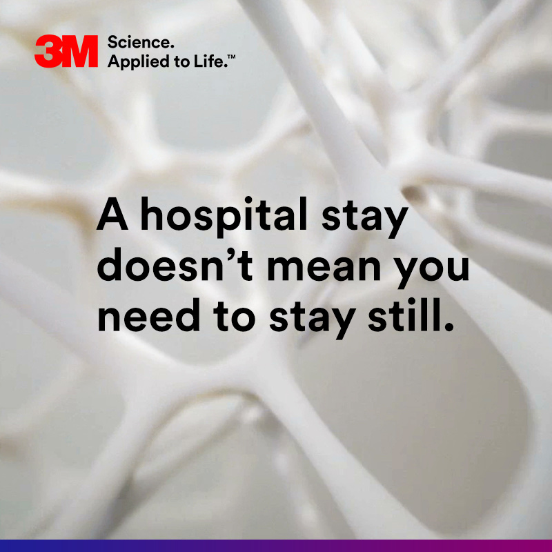
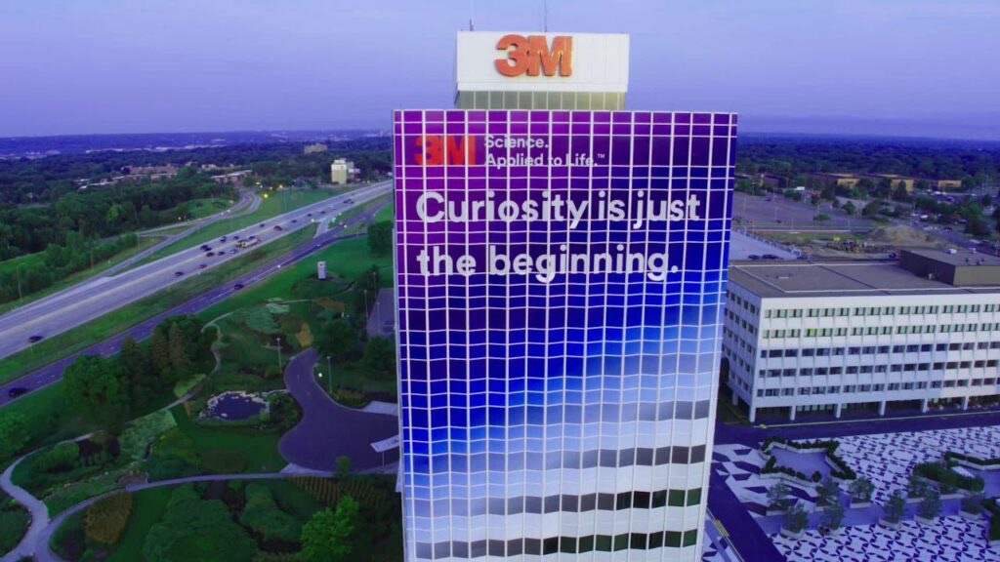
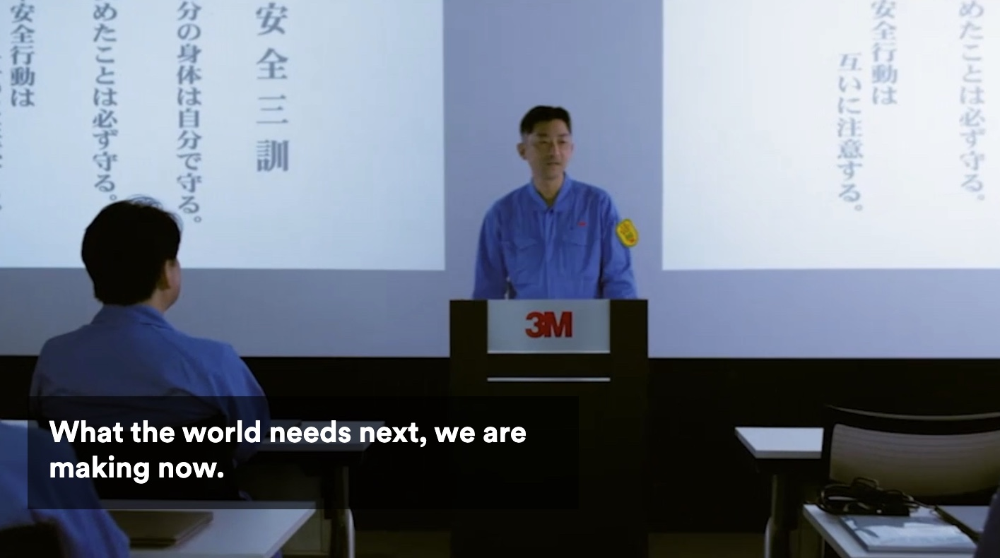

3M Global Brand Platform

Almost everyone on Earth used 3M technology every day — and almost nobody knew it. Worse, nobody had a reason to care. Before there was a brief for a global brand platform or a 25-year milestone, there was just one question: how do you get people to notice the company quietly powering their entire day?
Sixty thousand products, five business groups, each with decades of its own language. The task was a single global platform — and, harder, a way for every division to use it without flattening what made them different.
You're never more than 10 feet from 3M technology, and you interact with it 100 times a day.
Which reframed the whole thing. It was never an awareness problem — people were surrounded by the work. It was an attribution problem. The platform didn't need to explain what 3M makes. It needed to connect the science people never see to the life they're already living.
Brand platform copy carried across all five business groups. A brand training hub so teams inside 3M could apply the platform themselves. Rewritten business group pages. Supporting social and digital.
Partnering with Wolff Olins on strategy, we wrote the tagline that defined everything else — 3M Science. Applied to Life. — then turned it into foundational language employees, agencies and customers could actually repeat. With BBDO New York and Minneapolis, that ran through digital platforms, social, traditional advertising and the global Brand Central hub.



